01
好みの女性との
出会いを作る力
写真、プロフィール、アプリの使い方を整え、自分の魅力が伝わる入口を作ります。
好きになれる人を、選べる自分へ。
写真・プロフィールからデート、交際後まで。
6か月間、あなたの活動に伴走します。
※数値は営業資料記載の自社集計。2025年の交際開始は受講生99名中91名の報告に基づきます。個人の成果を保証するものではありません。
アプリを使っていて、こんな壁にぶつかっていませんか。
タイプの女性と、
なかなかマッチしない。
マッチしても、
デートまでつながらない。
初回デートで終わり、
次の約束ができない。
何を直せばいいか、
自分では分からない。
必要なのは、出会いの数と、その先の力。
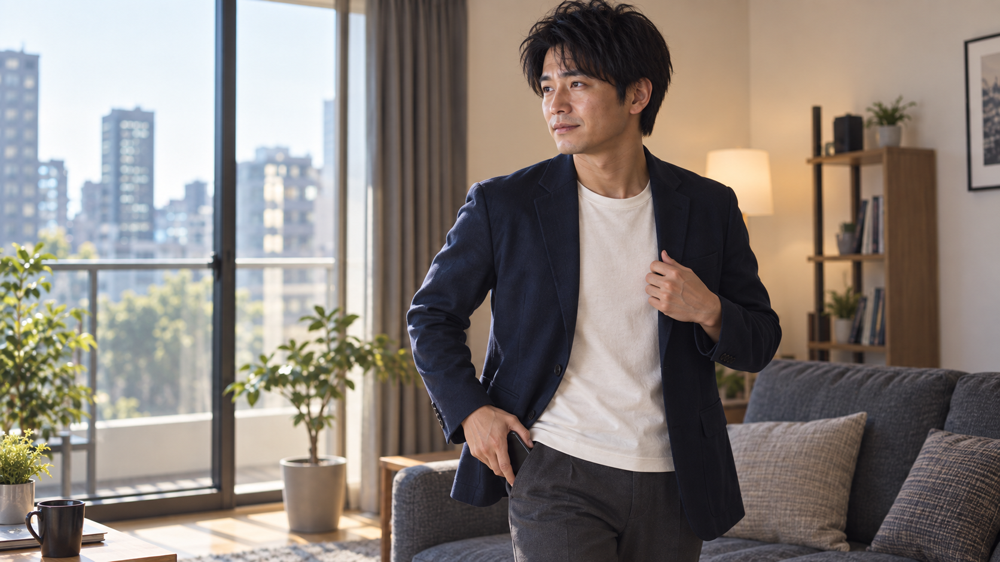
うまくいかなかった経験も、次の出会いに生かせる。MRKは一人ひとりの現在地から、前へ進む道筋を一緒に考えます。
アプリは、特別な出会い方ではなくなりました。だからこそ、登録するだけではなく、画面の中で自分の魅力が伝わる設計と、会ったあとの関係づくりが必要です。
結婚1年以内の夫婦のうち、
アプリで出会った人の割合。
アプリで最初に見られるのは、写真とプロフィール。自分では十分だと思っていても、画面上で人柄や魅力が伝わらなければ、会話が始まる機会を逃します。MRKは、出会いの入口から整えます。
メッセージ、電話、初回デート、次の約束。場面が変わるたび、必要な力も変わります。出会いを作ることと、心から好きになれる相手との関係を育てることを、ひと続きで考えます。
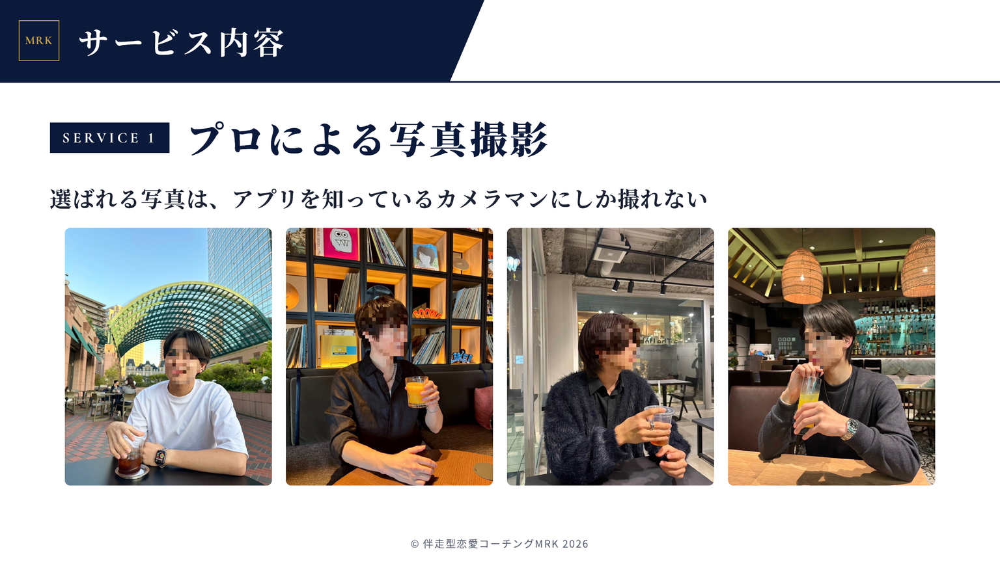
写真は、あなたと会う前に伝わる第一印象。服装、場所、表情まで設計し、人柄が伝わる入口をつくります。
営業資料に掲載された撮影例。画像を押すと拡大できます。
MRKが目指すのは、彼女を作りたい時に、
自分の力で出会いから交際まで進められる状態です。
写真、プロフィール、アプリの使い方を整え、自分の魅力が伝わる入口を作ります。
メッセージ、電話、デートを振り返り、相手との関係を少しずつ深めていきます。
心から好きになれる人と、
自分で関係を築けるように。
MRKが掲げるミッションです。目指すのは、マッチ数だけを追いかけることではありません。出会いを自分で作り、相手の気持ちを理解し、付き合ったあとも大切な関係を育てていくこと。
その過程で得る自信と経験を、交際の先にも残る力にしていきます。
休日に会いたい人がいる。何気ない会話が楽しみになる。将来のことも、自然に話せる。MRKは、そんな関係を自分の力で育てていくための6か月を支えます。
マッチやいいねの数の先にあるのは、大切な人と過ごす時間。MRKに届いた実際の報告から、ふたつの場面をご紹介します。
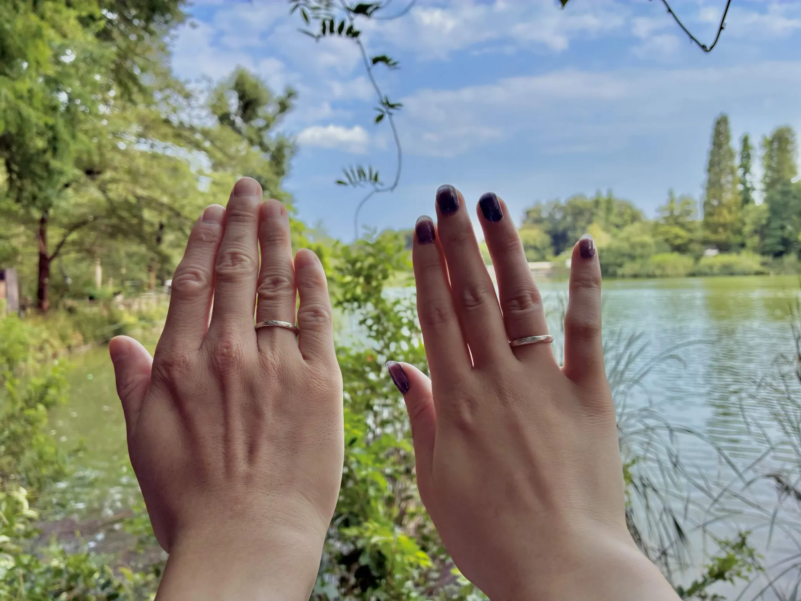
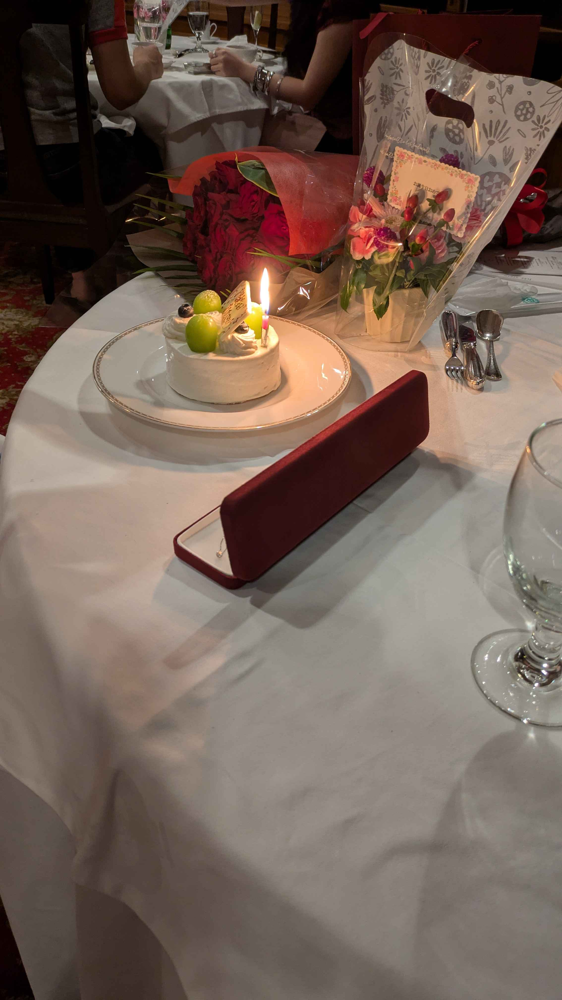
※掲載した写真とエピソードは個別の事例です。交際・結婚の時期や成果を保証するものではありません。
アプリを知るカメラマンによる撮影、女性目線のプロフィール、登録直後の動き方を一緒に整えます。
模擬デートと音声添削で、会話や振る舞いを具体的に振り返ります。次のデートで試すことが明確になります。
チャット相談、面談、勉強会で進捗を確認。迷った時に次の一手を一緒に考えます。
MRKは、一度のアドバイスで終わらせません。今の課題を見つけ、次の行動に落とし込み、実際の反応を見ながら調整していきます。
現在の写真、プロフィール、出会いの数、メッセージやデートを確認。どこで止まっているかを明確にします。
目指したい相手や関係から逆算し、使うアプリ、見せ方、会話、行動の優先順位を決めます。
撮影、アプリ運用、電話、模擬デート、実際のデートへ。机上の知識を自分の経験に変えます。
女性の視点と講師の添削をもとに振り返り、良かった点と次回変える点を具体的にします。
写真だけ、会話だけではなく。
出会いの入口から交際後まで、同じ方針で整える。
写真の選び方も、会話の振り返りも、次のデートの組み立ても。実践のたびに、相談できる相手がいる。
課題ごとに別々の答えを探すのではなく、出会いの入口から関係づくりまでを一つの方針で支えます。
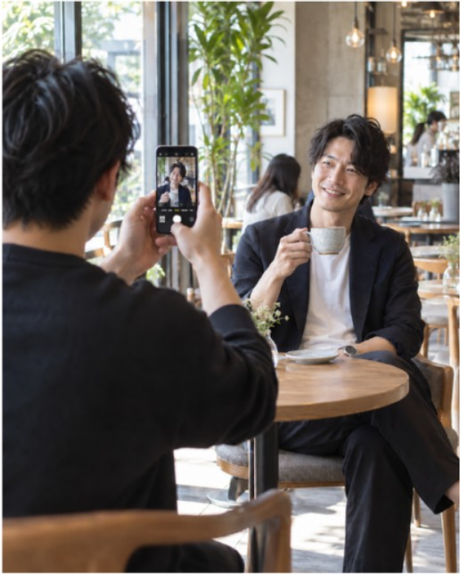
最初に見られる写真を、アプリでの出会いに合わせて設計。服装・髪型・表情も含めて撮影します。
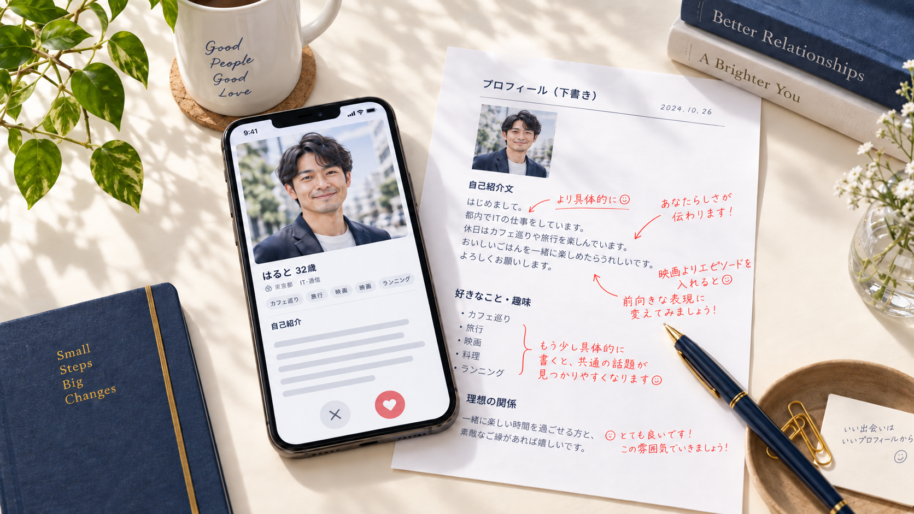
仕事や休日の過ごし方を聞き、MRK式テンプレートで自己紹介文を作成。女性からどう見えるかを確認し、人柄が伝わる言葉へ磨きます。
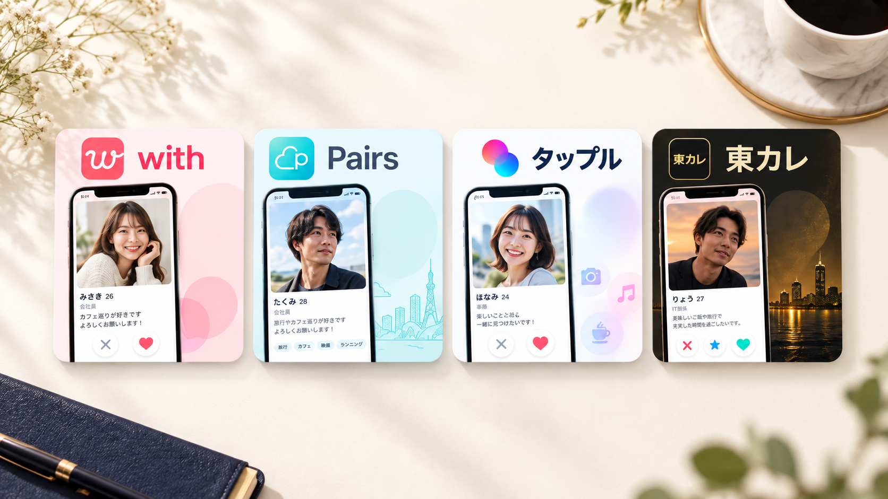
写真とプロフィールを整えてからアプリへ。使うアプリと登録直後の動きを決め、反応を見ながら次の一手を調整します。
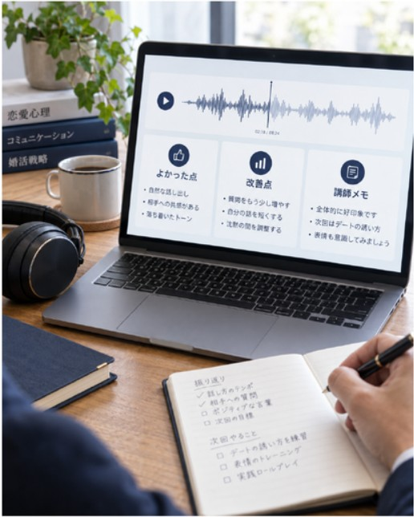
電話やデートの会話を振り返り、良かった点・改善点・次回試すことを整理。自分では気づきにくい癖を言葉にします。
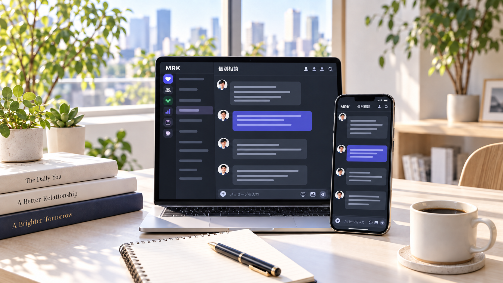
返信文面、お店選び、次の約束まで、活動中に生まれる迷いを共有。状況が動いている時に講師と次の一手を考えます。
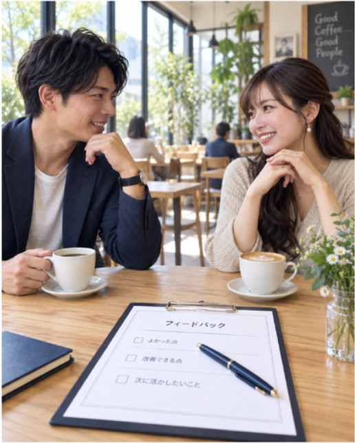
本番に近いカフェやディナーの場面で女性と会話を練習。終了後に女性の率直なフィードバックを受けます。
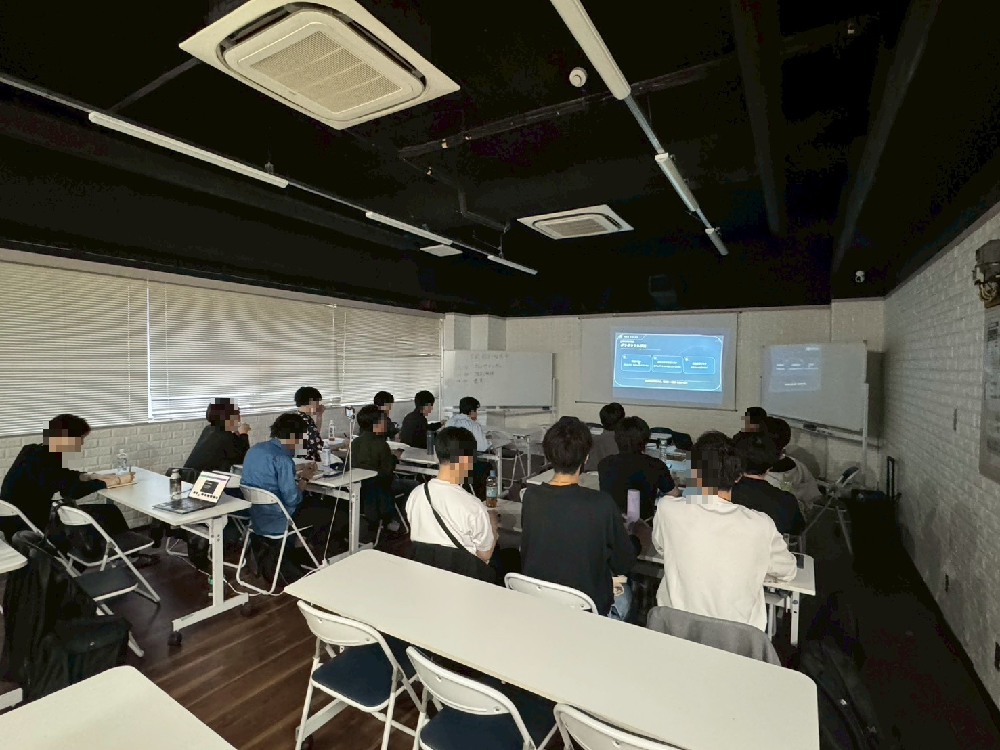
対面のフィードバック会や勉強会で、講師に直接相談。仲間の実践やデート報告からも学べます。
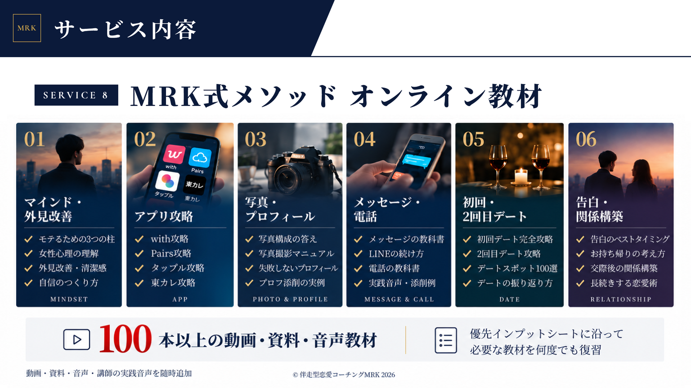
マインド・外見からアプリ、メッセージ、デート、交際後まで。必要なテーマを動画・資料・音声で見直せます。
営業資料に掲載されたサポートの説明図です。写真・プロフィール・模擬デート・教材が、どう組み合わされるかを紹介します。
※画像は営業資料の説明図です。実際の会員ページ・教材画面・添削画面ではありません。画像を押すと拡大できます。提供内容・条件は面談でご確認ください。
営業資料に記載された教材の6領域を、内容が分かるように整理しました。実際の教材一覧画面を再現したものではありません。
※教材の収録内容・利用条件はプランや時期により異なる場合があります。
※サポートの回数・対象プラン・対応地域などは、個別面談で現行条件をご案内します。
あなたの活動にどんな支援が入るのか。3つの場面で紹介します。
服装や髪型、表情、ポーズまで確認。撮影した写真をどうプロフィールに使うかも一緒に考えます。
会話の流れや距離感を試し、女性からの率直な反応を受け取ります。次に試す行動を明確にします。
電話やデートの会話を振り返り、良かった点、改善点、次回の一手に分けて返します。
※写真はイメージです。提供内容はプランや時期により異なる場合があります。
会話の音声を振り返り、良かった点・改善点・次のデートで試す行動を整理します。
自分では気づきにくい話し方や会話の流れも、講師と一緒に見直していきます。
※写真は実際の個別相談の様子です。音声添削の画面・書式を示すものではありません。提供内容はプランや時期により異なる場合があります。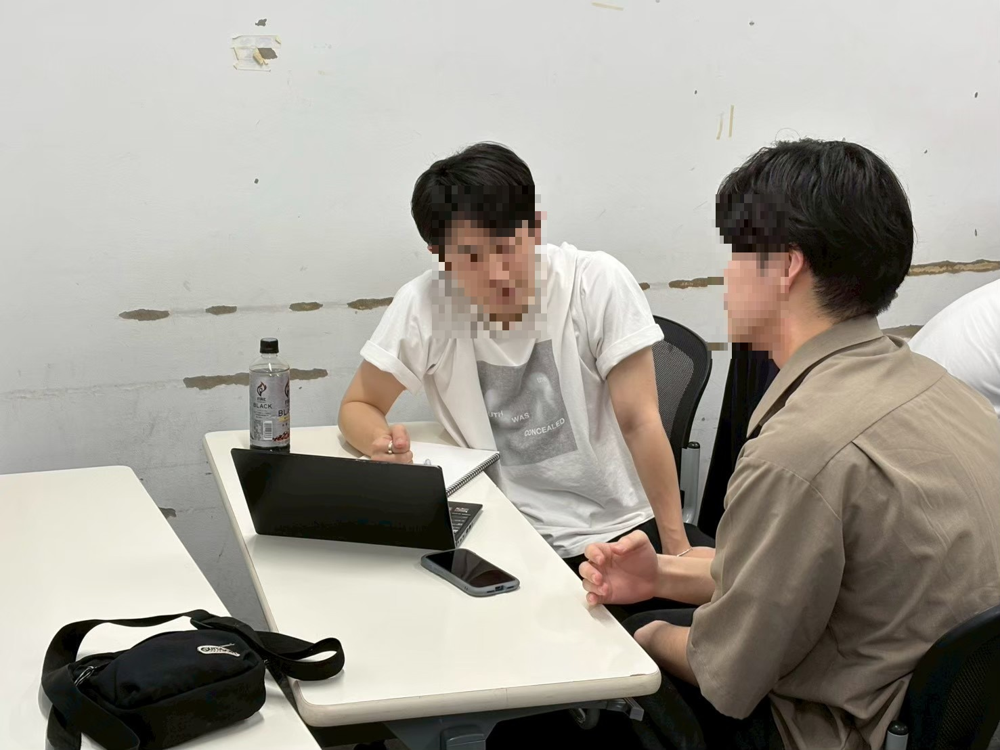
営業資料では、お申し込み時の特典として2つの追加サポートを紹介しています。撮影当日から日々の活動まで、迷いやすい場面にもう一歩寄り添います。
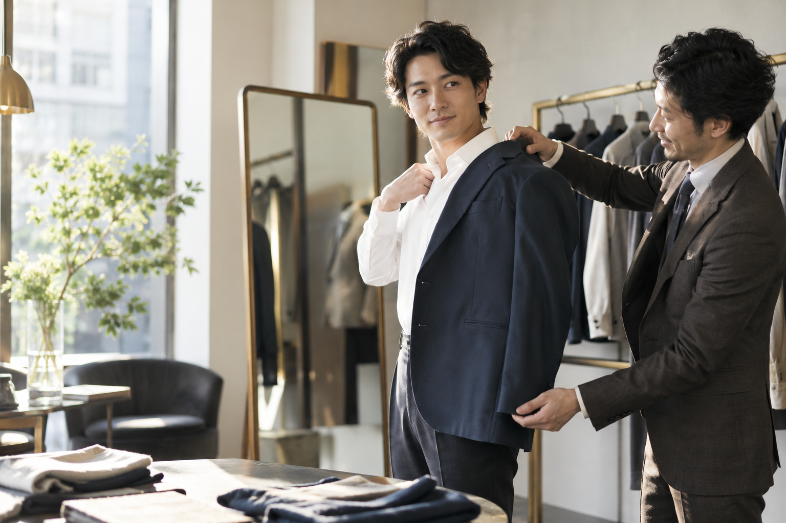
プロフィール写真を撮る当日、スタイリストと服を選ぶ。写真に写る前から、似合う装いと見せ方を一緒に整えます。
2か月に1回、講師と一対一で活動を確認。進み方や今の悩みを整理し、次の2か月に向けた行動を決めます。
※営業資料では当日申込者向けの特典として掲載されています。現在の実施状況・対象プラン・適用条件は個別面談でご案内します。写真はイメージです。
LINEに「MRK」と返信する方法を見る個別の相談に加え、対面フィードバック会や勉強会があります。講師に直接聞き、同じ課題に向き合う仲間の経験からも学べる環境です。
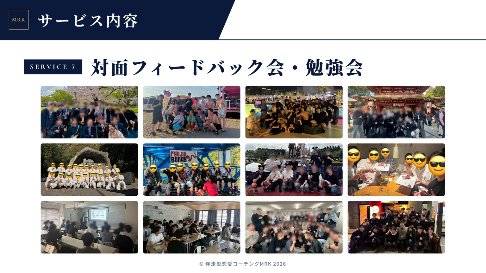
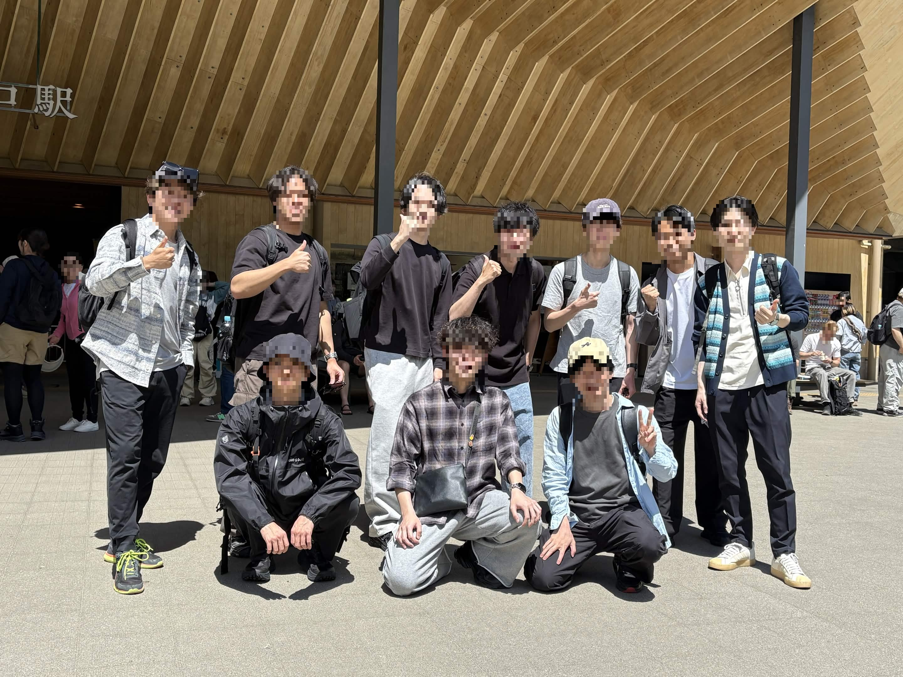
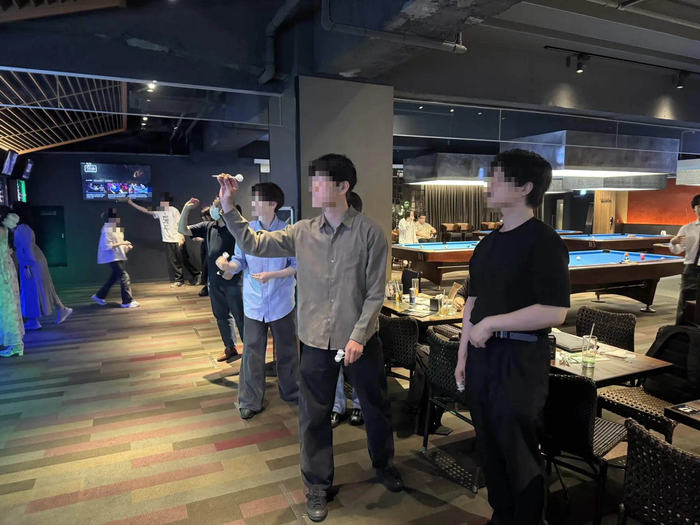
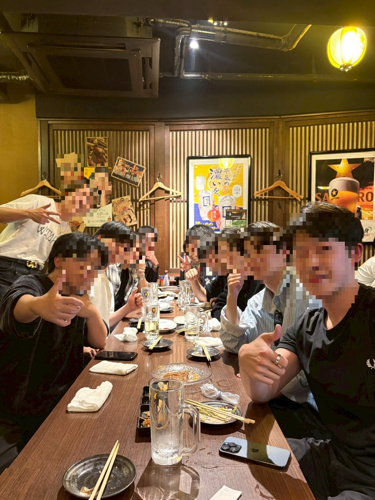
画面だけでは伝えにくい悩みも、その場で整理できます。
自分とは違う改善の過程や、実践の工夫に触れられます。
相談した内容を持ち帰り、日々の活動で試します。
※企画によって開催場所・参加条件が異なります。オフ会には別途参加費や飲食代がかかる場合があります。
一人ひとりの状況に合わせて進めるロードマップです。
初回面談で方向性を決め、撮影とプロフィール作成へ。アプリの初動を進め、実際の反応を見ます。
メッセージや電話からデートへ。模擬デートと添削を通して、会話や振る舞いを改善します。
相性の合う相手との関係づくりを支えます。付き合ったあとの相談にも対応します。
※進み方には個人差があります。期間内の交際成立を保証するものではありません。
出会いの数だけでなく、その先の関係が変わった事例です。
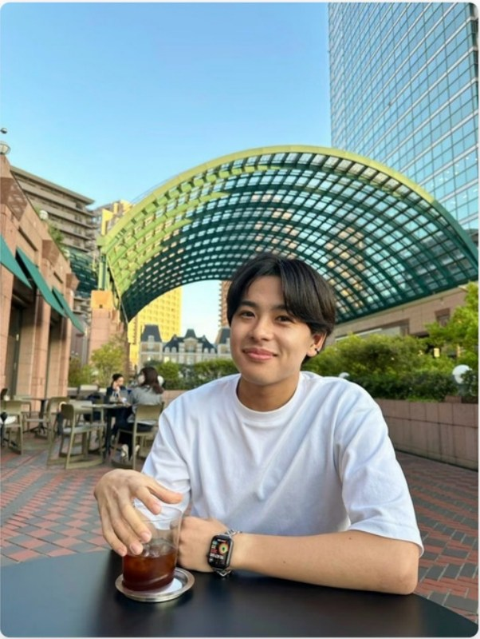
以前：8か月のアプリ利用でデート2人
受講後：withで1,300マッチ。交際は1年半以上に。
写真とプロフィールを整え、会話を実践。以前は月10マッチほどだった状態から出会いが増え、週に2人とデートするようになりました。その中で本当に好きだと思える女性と出会い、誕生日のお祝いや旅行を楽しむ関係へ。
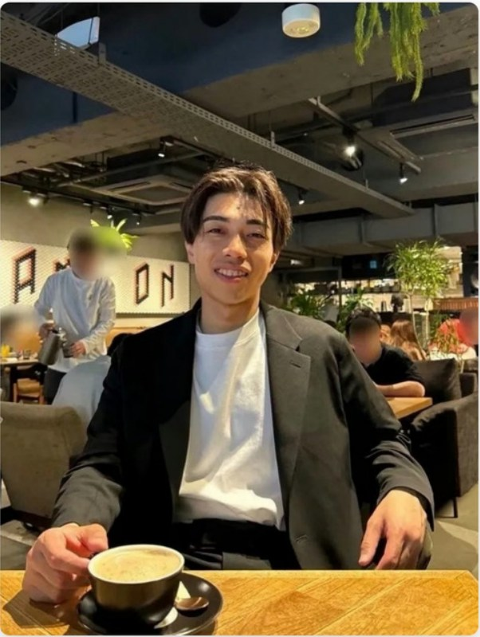
以前：交際経験がなく、自信を持てなかった
受講後：Pairsで450いいね。本命彼女と交際後、結婚。
服装を整え、デートの会話音声を振り返りながら、相手が楽しめるコミュニケーションを学びました。出会いを増やすだけで終わらず、本命の彼女との交際を重ね、結婚しています。
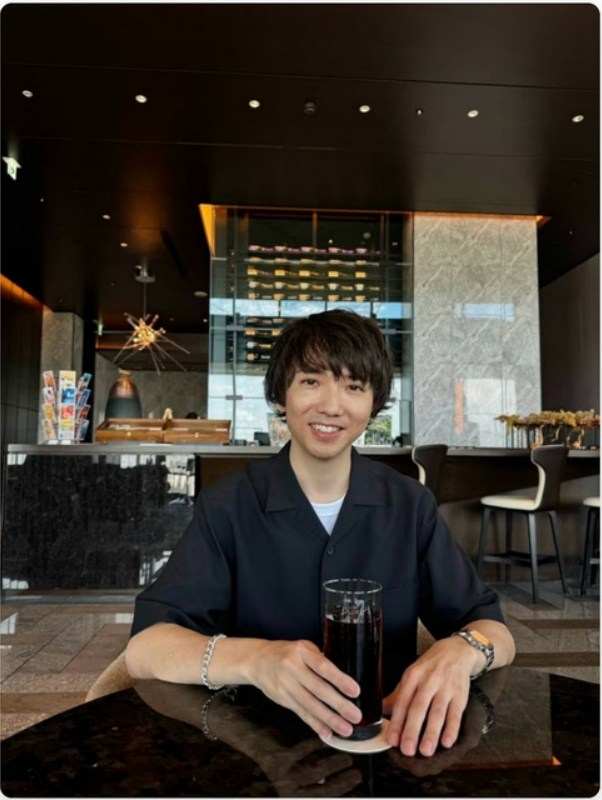
以前：長く恋愛から離れ、将来に不安があった
受講後：with・Pairsで各300いいね。本命彼女と交際。
受講をきっかけに活動を見直し、学んだことを一つずつ実践。12年ぶりに本命の彼女ができ、北海道旅行を楽しむ関係になりました。事例紹介時点では、同棲に向けた物件も決まっています。
営業資料に掲載されている受講生の変化です。掲載画像を押すと大きく表示できます。
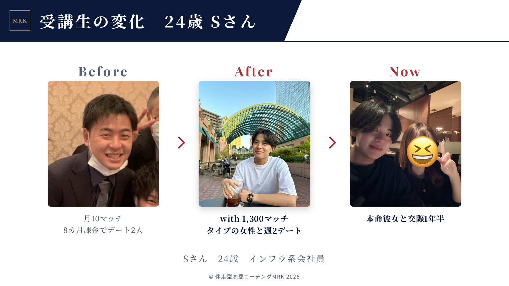
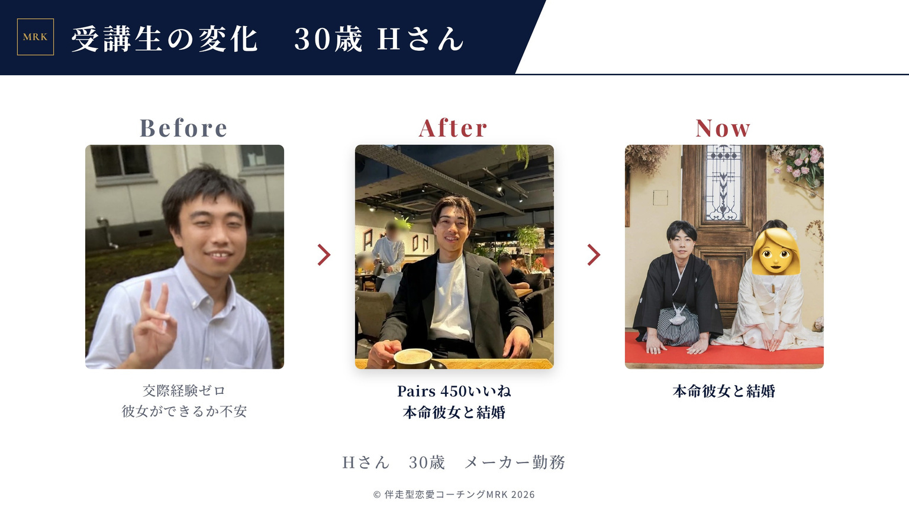
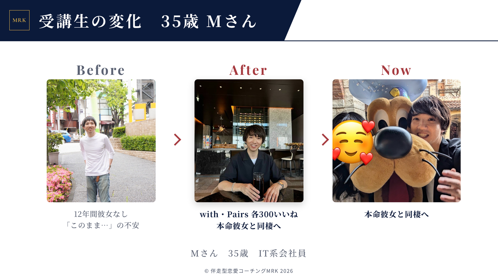
※掲載した個別事例です。成果には個人差があり、同様の結果を保証するものではありません。
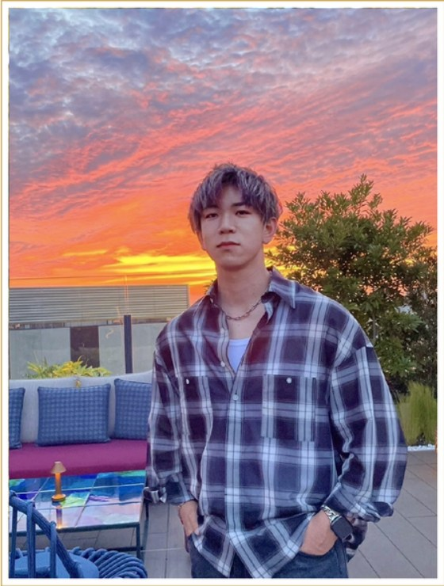
アプリ用写真の撮影と運用設計を専門に、入口で魅力が伝わる見せ方を支えます。Pairsで出会った相手との結婚経験もあります。
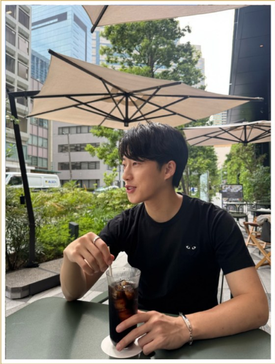
自身もアプリでの出会いに苦戦した経験から、写真・プロフィールの改善と、会ったあとの関係づくりを伝えます。
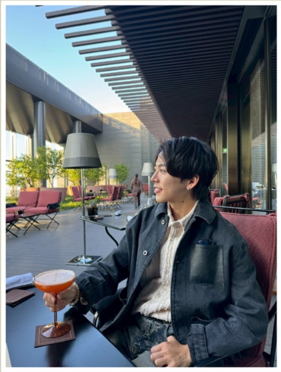
撮影とコンサルティングの経験をもとに、出会いの作り方から会話・デートの振り返りまで伴走します。
あなたに必要な一歩を、一緒に見つけていきます。
講師のけいとも、長く付き合った恋人との別れをきっかけに、出会いのない日常とアプリでの苦戦を経験しました。写真、プロフィール、運用、会話を一つずつ見直し、反応が変わっていった経験が、MRKの指導の原点です。
だからこそ、マッチ数を増やす方法だけで終わらせたくありません。相手を知り、自分の気持ちを伝え、交際後も大切にできる関係まで、一人ひとりの実践に寄り添います。
6か月の取り組みだからこそ、役割を曖昧にしません。MRKは準備と改善を支え、あなた自身が出会いに向けて行動します。
MRKは、真剣に恋活・婚活に向き合う方を対象に、参加前の面談を行います。
デートが特別なイベントで終わらず、会いたい相手と過ごす日常になっていく。その未来に向けて、今できることから始めましょう。
今の活動状況と目指す関係を伺い、どこで止まっているか、どんな支援が必要かを確認します。そのうえで、MRKサロンの内容、参加条件、現行プランをご案内します。
恋愛経験が少ない状態から活動を始めた受講生の事例があります。面談で現在の状況や目標を伺い、合う進め方をご案内します。
写真とプロフィールの準備から進める内容です。使うアプリや始め方も、現在の状況に合わせて相談できます。
撮影場所や日程は、面談で個別にご相談ください。
「MRK」と返信いただいた方へ、面談の案内をお送りします。料金、各プランの内容、現在の受け入れ条件は面談でご説明します。
交際の成立やマッチ数は保証されません。MRKは、写真からデート後の振り返りまで、活動を進めるための支援を提供します。
はい。写真・プロフィールに加え、メッセージ、電話、模擬デート、実際のデートの振り返りも支援します。提供範囲はプランにより異なるため、面談で詳しくご説明します。
女性と本番に近い場面で会話をし、終了後に女性の視点からフィードバックを受けます。会話や距離感について、次に直す点を具体的にするための機会です。
交際後の関係づくりや同棲・婚約に向けた相談もできます。具体的なサポート期間と範囲は、面談時にご確認ください。
面談で活動に使える時間を伺い、進め方を相談します。週1回を目安に講師とやり取りし、実際に相手と会い、助言を次の行動で試すことをお願いしています。
今の悩みや、目指したい関係を聞かせてください。MRKサロンの内容と参加条件を、面談で詳しくご説明します。
MRKサロンは審査制です。参加条件は個別面談でご確認ください。
詳しく知りたい方は
LINEに MRK と返信